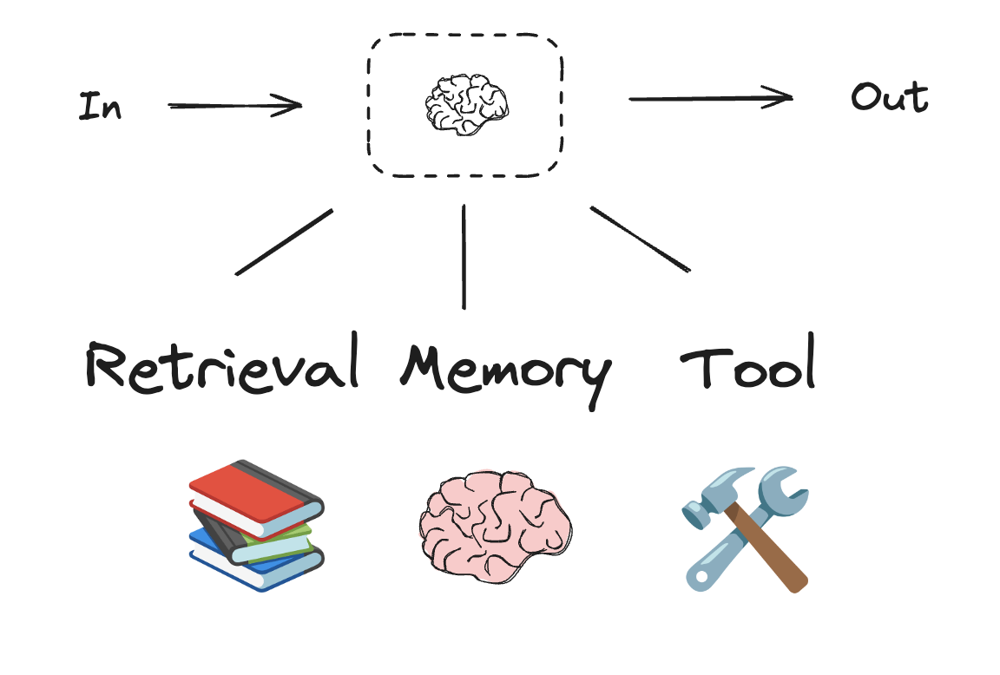

工作流与智能体¶
本指南回顾了智能体系统的常见模式。在描述这些系统时，区分“工作流”和“智能体”可能会很有用。Anthropic 的博客文章《构建有效的智能体》很好地解释了这种差异。
工作流是通过预定义代码路径编排 LLM 和工具的系统。而智能体则是 LLM 动态指导其自身流程和工具使用的系统，它们能自主控制如何完成任务。
以下是可视化这些差异的简单方法

在构建智能体和工作流时，LangGraph 提供了许多优势，包括持久化、流式传输以及对调试和部署的支持。
设置¶
您可以使用任何聊天模型，只要它支持结构化输出和工具调用。下面，我们将展示安装包、设置 API 密钥以及测试 Anthropic 的结构化输出/工具调用的过程。
初始化 LLM
API 参考：ChatAnthropic
import os
import getpass
from langchain_anthropic import ChatAnthropic
def _set_env(var: str):
if not os.environ.get(var):
os.environ[var] = getpass.getpass(f"{var}: ")
_set_env("ANTHROPIC_API_KEY")
llm = ChatAnthropic(model="claude-3-5-sonnet-latest")
构建模块：增强型 LLM¶
LLM 具有支持构建工作流和智能体的增强功能。这些功能包括结构化输出和工具调用，如 Anthropic 关于《构建有效智能体》博客文章中的图片所示。

# Schema for structured output
from pydantic import BaseModel, Field
class SearchQuery(BaseModel):
search_query: str = Field(None, description="Query that is optimized web search.")
justification: str = Field(
None, description="Why this query is relevant to the user's request."
)
# Augment the LLM with schema for structured output
structured_llm = llm.with_structured_output(SearchQuery)
# Invoke the augmented LLM
output = structured_llm.invoke("How does Calcium CT score relate to high cholesterol?")
# Define a tool
def multiply(a: int, b: int) -> int:
return a * b
# Augment the LLM with tools
llm_with_tools = llm.bind_tools([multiply])
# Invoke the LLM with input that triggers the tool call
msg = llm_with_tools.invoke("What is 2 times 3?")
# Get the tool call
msg.tool_calls
提示链¶
在提示链中，每个 LLM 调用都会处理前一个调用的输出。
正如 Anthropic 关于《构建有效智能体》的博客文章中所述
提示链将任务分解为一系列步骤，其中每个 LLM 调用都会处理前一个调用的输出。您可以在任何中间步骤添加程序化检查（参见下图中的“门”），以确保流程仍在正轨上。
何时使用此工作流：此工作流非常适合任务可以轻松、清晰地分解为固定子任务的情况。主要目标是通过使每个 LLM 调用成为一个更简单的任务，从而牺牲一些延迟来换取更高的准确性。

from typing_extensions import TypedDict
from langgraph.graph import StateGraph, START, END
from IPython.display import Image, display
# Graph state
class State(TypedDict):
topic: str
joke: str
improved_joke: str
final_joke: str
# Nodes
def generate_joke(state: State):
"""First LLM call to generate initial joke"""
msg = llm.invoke(f"Write a short joke about {state['topic']}")
return {"joke": msg.content}
def check_punchline(state: State):
"""Gate function to check if the joke has a punchline"""
# Simple check - does the joke contain "?" or "!"
if "?" in state["joke"] or "!" in state["joke"]:
return "Pass"
return "Fail"
def improve_joke(state: State):
"""Second LLM call to improve the joke"""
msg = llm.invoke(f"Make this joke funnier by adding wordplay: {state['joke']}")
return {"improved_joke": msg.content}
def polish_joke(state: State):
"""Third LLM call for final polish"""
msg = llm.invoke(f"Add a surprising twist to this joke: {state['improved_joke']}")
return {"final_joke": msg.content}
# Build workflow
workflow = StateGraph(State)
# Add nodes
workflow.add_node("generate_joke", generate_joke)
workflow.add_node("improve_joke", improve_joke)
workflow.add_node("polish_joke", polish_joke)
# Add edges to connect nodes
workflow.add_edge(START, "generate_joke")
workflow.add_conditional_edges(
"generate_joke", check_punchline, {"Fail": "improve_joke", "Pass": END}
)
workflow.add_edge("improve_joke", "polish_joke")
workflow.add_edge("polish_joke", END)
# Compile
chain = workflow.compile()
# Show workflow
display(Image(chain.get_graph().draw_mermaid_png()))
# Invoke
state = chain.invoke({"topic": "cats"})
print("Initial joke:")
print(state["joke"])
print("\n--- --- ---\n")
if "improved_joke" in state:
print("Improved joke:")
print(state["improved_joke"])
print("\n--- --- ---\n")
print("Final joke:")
print(state["final_joke"])
else:
print("Joke failed quality gate - no punchline detected!")
LangSmith 追踪
https://smith.langchain.com/public/a0281fca-3a71-46de-beee-791468607b75/r
资源
LangChain 学院
在此处查看我们关于提示链的课程：here。
from langgraph.func import entrypoint, task
# Tasks
@task
def generate_joke(topic: str):
"""First LLM call to generate initial joke"""
msg = llm.invoke(f"Write a short joke about {topic}")
return msg.content
def check_punchline(joke: str):
"""Gate function to check if the joke has a punchline"""
# Simple check - does the joke contain "?" or "!"
if "?" in joke or "!" in joke:
return "Fail"
return "Pass"
@task
def improve_joke(joke: str):
"""Second LLM call to improve the joke"""
msg = llm.invoke(f"Make this joke funnier by adding wordplay: {joke}")
return msg.content
@task
def polish_joke(joke: str):
"""Third LLM call for final polish"""
msg = llm.invoke(f"Add a surprising twist to this joke: {joke}")
return msg.content
@entrypoint()
def prompt_chaining_workflow(topic: str):
original_joke = generate_joke(topic).result()
if check_punchline(original_joke) == "Pass":
return original_joke
improved_joke = improve_joke(original_joke).result()
return polish_joke(improved_joke).result()
# Invoke
for step in prompt_chaining_workflow.stream("cats", stream_mode="updates"):
print(step)
print("\n")
LangSmith 追踪
https://smith.langchain.com/public/332fa4fc-b6ca-416e-baa3-161625e69163/r
并行化¶
通过并行化，LLM 可以同时处理任务
LLM 有时可以同时处理一个任务，并通过编程方式聚合其输出。这种工作流，即并行化，体现在两种关键变体中：分段：将任务分解为并行运行的独立子任务。投票：多次运行同一任务以获取多样化输出。
何时使用此工作流：当划分的子任务可以并行化以提高速度时，或者当需要多个视角或尝试以获得更高置信度的结果时，并行化是有效的。对于具有多种考虑因素的复杂任务，当每个考虑因素都由单独的 LLM 调用处理时，LLM 通常表现更好，从而可以集中精力处理每个特定方面。

# Graph state
class State(TypedDict):
topic: str
joke: str
story: str
poem: str
combined_output: str
# Nodes
def call_llm_1(state: State):
"""First LLM call to generate initial joke"""
msg = llm.invoke(f"Write a joke about {state['topic']}")
return {"joke": msg.content}
def call_llm_2(state: State):
"""Second LLM call to generate story"""
msg = llm.invoke(f"Write a story about {state['topic']}")
return {"story": msg.content}
def call_llm_3(state: State):
"""Third LLM call to generate poem"""
msg = llm.invoke(f"Write a poem about {state['topic']}")
return {"poem": msg.content}
def aggregator(state: State):
"""Combine the joke and story into a single output"""
combined = f"Here's a story, joke, and poem about {state['topic']}!\n\n"
combined += f"STORY:\n{state['story']}\n\n"
combined += f"JOKE:\n{state['joke']}\n\n"
combined += f"POEM:\n{state['poem']}"
return {"combined_output": combined}
# Build workflow
parallel_builder = StateGraph(State)
# Add nodes
parallel_builder.add_node("call_llm_1", call_llm_1)
parallel_builder.add_node("call_llm_2", call_llm_2)
parallel_builder.add_node("call_llm_3", call_llm_3)
parallel_builder.add_node("aggregator", aggregator)
# Add edges to connect nodes
parallel_builder.add_edge(START, "call_llm_1")
parallel_builder.add_edge(START, "call_llm_2")
parallel_builder.add_edge(START, "call_llm_3")
parallel_builder.add_edge("call_llm_1", "aggregator")
parallel_builder.add_edge("call_llm_2", "aggregator")
parallel_builder.add_edge("call_llm_3", "aggregator")
parallel_builder.add_edge("aggregator", END)
parallel_workflow = parallel_builder.compile()
# Show workflow
display(Image(parallel_workflow.get_graph().draw_mermaid_png()))
# Invoke
state = parallel_workflow.invoke({"topic": "cats"})
print(state["combined_output"])
LangSmith 追踪
https://smith.langchain.com/public/3be2e53c-ca94-40dd-934f-82ff87fac277/r
资源
文档
在此处查看我们关于并行化的文档：here。
LangChain 学院
在此处查看我们关于并行化的课程：here。
@task
def call_llm_1(topic: str):
"""First LLM call to generate initial joke"""
msg = llm.invoke(f"Write a joke about {topic}")
return msg.content
@task
def call_llm_2(topic: str):
"""Second LLM call to generate story"""
msg = llm.invoke(f"Write a story about {topic}")
return msg.content
@task
def call_llm_3(topic):
"""Third LLM call to generate poem"""
msg = llm.invoke(f"Write a poem about {topic}")
return msg.content
@task
def aggregator(topic, joke, story, poem):
"""Combine the joke and story into a single output"""
combined = f"Here's a story, joke, and poem about {topic}!\n\n"
combined += f"STORY:\n{story}\n\n"
combined += f"JOKE:\n{joke}\n\n"
combined += f"POEM:\n{poem}"
return combined
# Build workflow
@entrypoint()
def parallel_workflow(topic: str):
joke_fut = call_llm_1(topic)
story_fut = call_llm_2(topic)
poem_fut = call_llm_3(topic)
return aggregator(
topic, joke_fut.result(), story_fut.result(), poem_fut.result()
).result()
# Invoke
for step in parallel_workflow.stream("cats", stream_mode="updates"):
print(step)
print("\n")
LangSmith 追踪
https://smith.langchain.com/public/623d033f-e814-41e9-80b1-75e6abb67801/r
路由¶
路由对输入进行分类，并将其导向后续任务。正如 Anthropic 关于《构建有效智能体》的博客文章中所述
路由对输入进行分类，并将其导向专门的后续任务。此工作流允许关注点分离，并构建更专业的提示。如果没有此工作流，针对一种输入进行优化可能会损害其他输入的性能。
何时使用此工作流：路由非常适用于具有不同类别、最好单独处理的复杂任务，以及可以通过 LLM 或更传统的分类模型/算法准确处理分类的情况。

from typing_extensions import Literal
from langchain_core.messages import HumanMessage, SystemMessage
# Schema for structured output to use as routing logic
class Route(BaseModel):
step: Literal["poem", "story", "joke"] = Field(
None, description="The next step in the routing process"
)
# Augment the LLM with schema for structured output
router = llm.with_structured_output(Route)
# State
class State(TypedDict):
input: str
decision: str
output: str
# Nodes
def llm_call_1(state: State):
"""Write a story"""
result = llm.invoke(state["input"])
return {"output": result.content}
def llm_call_2(state: State):
"""Write a joke"""
result = llm.invoke(state["input"])
return {"output": result.content}
def llm_call_3(state: State):
"""Write a poem"""
result = llm.invoke(state["input"])
return {"output": result.content}
def llm_call_router(state: State):
"""Route the input to the appropriate node"""
# Run the augmented LLM with structured output to serve as routing logic
decision = router.invoke(
[
SystemMessage(
content="Route the input to story, joke, or poem based on the user's request."
),
HumanMessage(content=state["input"]),
]
)
return {"decision": decision.step}
# Conditional edge function to route to the appropriate node
def route_decision(state: State):
# Return the node name you want to visit next
if state["decision"] == "story":
return "llm_call_1"
elif state["decision"] == "joke":
return "llm_call_2"
elif state["decision"] == "poem":
return "llm_call_3"
# Build workflow
router_builder = StateGraph(State)
# Add nodes
router_builder.add_node("llm_call_1", llm_call_1)
router_builder.add_node("llm_call_2", llm_call_2)
router_builder.add_node("llm_call_3", llm_call_3)
router_builder.add_node("llm_call_router", llm_call_router)
# Add edges to connect nodes
router_builder.add_edge(START, "llm_call_router")
router_builder.add_conditional_edges(
"llm_call_router",
route_decision,
{ # Name returned by route_decision : Name of next node to visit
"llm_call_1": "llm_call_1",
"llm_call_2": "llm_call_2",
"llm_call_3": "llm_call_3",
},
)
router_builder.add_edge("llm_call_1", END)
router_builder.add_edge("llm_call_2", END)
router_builder.add_edge("llm_call_3", END)
# Compile workflow
router_workflow = router_builder.compile()
# Show the workflow
display(Image(router_workflow.get_graph().draw_mermaid_png()))
# Invoke
state = router_workflow.invoke({"input": "Write me a joke about cats"})
print(state["output"])
LangSmith 追踪
https://smith.langchain.com/public/c4580b74-fe91-47e4-96fe-7fac598d509c/r
资源
LangChain 学院
在此处查看我们关于路由的课程：here。
示例
from typing_extensions import Literal
from pydantic import BaseModel
from langchain_core.messages import HumanMessage, SystemMessage
# Schema for structured output to use as routing logic
class Route(BaseModel):
step: Literal["poem", "story", "joke"] = Field(
None, description="The next step in the routing process"
)
# Augment the LLM with schema for structured output
router = llm.with_structured_output(Route)
@task
def llm_call_1(input_: str):
"""Write a story"""
result = llm.invoke(input_)
return result.content
@task
def llm_call_2(input_: str):
"""Write a joke"""
result = llm.invoke(input_)
return result.content
@task
def llm_call_3(input_: str):
"""Write a poem"""
result = llm.invoke(input_)
return result.content
def llm_call_router(input_: str):
"""Route the input to the appropriate node"""
# Run the augmented LLM with structured output to serve as routing logic
decision = router.invoke(
[
SystemMessage(
content="Route the input to story, joke, or poem based on the user's request."
),
HumanMessage(content=input_),
]
)
return decision.step
# Create workflow
@entrypoint()
def router_workflow(input_: str):
next_step = llm_call_router(input_)
if next_step == "story":
llm_call = llm_call_1
elif next_step == "joke":
llm_call = llm_call_2
elif next_step == "poem":
llm_call = llm_call_3
return llm_call(input_).result()
# Invoke
for step in router_workflow.stream("Write me a joke about cats", stream_mode="updates"):
print(step)
print("\n")
LangSmith 追踪
https://smith.langchain.com/public/5e2eb979-82dd-402c-b1a0-a8cceaf2a28a/r
编排器-工作器¶
在编排器-工作器模式下，编排器将任务分解并委托给工作器。正如 Anthropic 关于《构建有效智能体》的博客文章中所述
在编排器-工作器工作流中，一个中央 LLM 动态地分解任务，将其委托给工作器 LLM，并综合它们的结果。
何时使用此工作流：此工作流非常适合那些无法预测所需子任务的复杂任务（例如，在编码中，需要更改的文件数量和每个文件中更改的性质可能取决于任务）。尽管它在拓扑结构上相似，但与并行化的关键区别在于其灵活性——子任务不是预定义的，而是由编排器根据特定输入确定的。

from typing import Annotated, List
import operator
# Schema for structured output to use in planning
class Section(BaseModel):
name: str = Field(
description="Name for this section of the report.",
)
description: str = Field(
description="Brief overview of the main topics and concepts to be covered in this section.",
)
class Sections(BaseModel):
sections: List[Section] = Field(
description="Sections of the report.",
)
# Augment the LLM with schema for structured output
planner = llm.with_structured_output(Sections)
在 LangGraph 中创建工作器
由于编排器-工作器工作流很常见，LangGraph **提供了 Send API 来支持此功能**。它允许您动态创建工作器节点并将特定输入发送给每个节点。每个工作器都有自己的状态，所有工作器输出都写入可供编排器图访问的共享状态键中。这使编排器可以访问所有工作器输出，并允许它将它们综合为最终输出。如下所示，我们遍历一个部分列表并将每个部分 Send 到一个工作器节点。请在此处和此处查看更多文档：here and here。
from langgraph.constants import Send
# Graph state
class State(TypedDict):
topic: str # Report topic
sections: list[Section] # List of report sections
completed_sections: Annotated[
list, operator.add
] # All workers write to this key in parallel
final_report: str # Final report
# Worker state
class WorkerState(TypedDict):
section: Section
completed_sections: Annotated[list, operator.add]
# Nodes
def orchestrator(state: State):
"""Orchestrator that generates a plan for the report"""
# Generate queries
report_sections = planner.invoke(
[
SystemMessage(content="Generate a plan for the report."),
HumanMessage(content=f"Here is the report topic: {state['topic']}"),
]
)
return {"sections": report_sections.sections}
def llm_call(state: WorkerState):
"""Worker writes a section of the report"""
# Generate section
section = llm.invoke(
[
SystemMessage(
content="Write a report section following the provided name and description. Include no preamble for each section. Use markdown formatting."
),
HumanMessage(
content=f"Here is the section name: {state['section'].name} and description: {state['section'].description}"
),
]
)
# Write the updated section to completed sections
return {"completed_sections": [section.content]}
def synthesizer(state: State):
"""Synthesize full report from sections"""
# List of completed sections
completed_sections = state["completed_sections"]
# Format completed section to str to use as context for final sections
completed_report_sections = "\n\n---\n\n".join(completed_sections)
return {"final_report": completed_report_sections}
# Conditional edge function to create llm_call workers that each write a section of the report
def assign_workers(state: State):
"""Assign a worker to each section in the plan"""
# Kick off section writing in parallel via Send() API
return [Send("llm_call", {"section": s}) for s in state["sections"]]
# Build workflow
orchestrator_worker_builder = StateGraph(State)
# Add the nodes
orchestrator_worker_builder.add_node("orchestrator", orchestrator)
orchestrator_worker_builder.add_node("llm_call", llm_call)
orchestrator_worker_builder.add_node("synthesizer", synthesizer)
# Add edges to connect nodes
orchestrator_worker_builder.add_edge(START, "orchestrator")
orchestrator_worker_builder.add_conditional_edges(
"orchestrator", assign_workers, ["llm_call"]
)
orchestrator_worker_builder.add_edge("llm_call", "synthesizer")
orchestrator_worker_builder.add_edge("synthesizer", END)
# Compile the workflow
orchestrator_worker = orchestrator_worker_builder.compile()
# Show the workflow
display(Image(orchestrator_worker.get_graph().draw_mermaid_png()))
# Invoke
state = orchestrator_worker.invoke({"topic": "Create a report on LLM scaling laws"})
from IPython.display import Markdown
Markdown(state["final_report"])
LangSmith 追踪
https://smith.langchain.com/public/78cbcfc3-38bf-471d-b62a-b299b144237d/r
资源
LangChain 学院
在此处查看我们关于编排器-工作器的课程：here。
示例
from typing import List
# Schema for structured output to use in planning
class Section(BaseModel):
name: str = Field(
description="Name for this section of the report.",
)
description: str = Field(
description="Brief overview of the main topics and concepts to be covered in this section.",
)
class Sections(BaseModel):
sections: List[Section] = Field(
description="Sections of the report.",
)
# Augment the LLM with schema for structured output
planner = llm.with_structured_output(Sections)
@task
def orchestrator(topic: str):
"""Orchestrator that generates a plan for the report"""
# Generate queries
report_sections = planner.invoke(
[
SystemMessage(content="Generate a plan for the report."),
HumanMessage(content=f"Here is the report topic: {topic}"),
]
)
return report_sections.sections
@task
def llm_call(section: Section):
"""Worker writes a section of the report"""
# Generate section
result = llm.invoke(
[
SystemMessage(content="Write a report section."),
HumanMessage(
content=f"Here is the section name: {section.name} and description: {section.description}"
),
]
)
# Write the updated section to completed sections
return result.content
@task
def synthesizer(completed_sections: list[str]):
"""Synthesize full report from sections"""
final_report = "\n\n---\n\n".join(completed_sections)
return final_report
@entrypoint()
def orchestrator_worker(topic: str):
sections = orchestrator(topic).result()
section_futures = [llm_call(section) for section in sections]
final_report = synthesizer(
[section_fut.result() for section_fut in section_futures]
).result()
return final_report
# Invoke
report = orchestrator_worker.invoke("Create a report on LLM scaling laws")
from IPython.display import Markdown
Markdown(report)
LangSmith 追踪
https://smith.langchain.com/public/75a636d0-6179-4a12-9836-e0aa571e87c5/r
评估器-优化器¶
在评估器-优化器工作流中，一个 LLM 调用生成响应，而另一个在循环中提供评估和反馈
在评估器-优化器工作流中，一个 LLM 调用生成响应，而另一个在循环中提供评估和反馈。
何时使用此工作流：当有明确的评估标准，并且迭代细化能提供可衡量的价值时，此工作流尤其有效。适用于此工作流的两个良好迹象是：首先，当人类清晰地表达其反馈时，LLM 响应可以显著改进；其次，LLM 能够提供此类反馈。这类似于人类作者在撰写精美文档时可能经历的迭代写作过程。

# Graph state
class State(TypedDict):
joke: str
topic: str
feedback: str
funny_or_not: str
# Schema for structured output to use in evaluation
class Feedback(BaseModel):
grade: Literal["funny", "not funny"] = Field(
description="Decide if the joke is funny or not.",
)
feedback: str = Field(
description="If the joke is not funny, provide feedback on how to improve it.",
)
# Augment the LLM with schema for structured output
evaluator = llm.with_structured_output(Feedback)
# Nodes
def llm_call_generator(state: State):
"""LLM generates a joke"""
if state.get("feedback"):
msg = llm.invoke(
f"Write a joke about {state['topic']} but take into account the feedback: {state['feedback']}"
)
else:
msg = llm.invoke(f"Write a joke about {state['topic']}")
return {"joke": msg.content}
def llm_call_evaluator(state: State):
"""LLM evaluates the joke"""
grade = evaluator.invoke(f"Grade the joke {state['joke']}")
return {"funny_or_not": grade.grade, "feedback": grade.feedback}
# Conditional edge function to route back to joke generator or end based upon feedback from the evaluator
def route_joke(state: State):
"""Route back to joke generator or end based upon feedback from the evaluator"""
if state["funny_or_not"] == "funny":
return "Accepted"
elif state["funny_or_not"] == "not funny":
return "Rejected + Feedback"
# Build workflow
optimizer_builder = StateGraph(State)
# Add the nodes
optimizer_builder.add_node("llm_call_generator", llm_call_generator)
optimizer_builder.add_node("llm_call_evaluator", llm_call_evaluator)
# Add edges to connect nodes
optimizer_builder.add_edge(START, "llm_call_generator")
optimizer_builder.add_edge("llm_call_generator", "llm_call_evaluator")
optimizer_builder.add_conditional_edges(
"llm_call_evaluator",
route_joke,
{ # Name returned by route_joke : Name of next node to visit
"Accepted": END,
"Rejected + Feedback": "llm_call_generator",
},
)
# Compile the workflow
optimizer_workflow = optimizer_builder.compile()
# Show the workflow
display(Image(optimizer_workflow.get_graph().draw_mermaid_png()))
# Invoke
state = optimizer_workflow.invoke({"topic": "Cats"})
print(state["joke"])
LangSmith 追踪
https://smith.langchain.com/public/86ab3e60-2000-4bff-b988-9b89a3269789/r
资源
示例
# Schema for structured output to use in evaluation
class Feedback(BaseModel):
grade: Literal["funny", "not funny"] = Field(
description="Decide if the joke is funny or not.",
)
feedback: str = Field(
description="If the joke is not funny, provide feedback on how to improve it.",
)
# Augment the LLM with schema for structured output
evaluator = llm.with_structured_output(Feedback)
# Nodes
@task
def llm_call_generator(topic: str, feedback: Feedback):
"""LLM generates a joke"""
if feedback:
msg = llm.invoke(
f"Write a joke about {topic} but take into account the feedback: {feedback}"
)
else:
msg = llm.invoke(f"Write a joke about {topic}")
return msg.content
@task
def llm_call_evaluator(joke: str):
"""LLM evaluates the joke"""
feedback = evaluator.invoke(f"Grade the joke {joke}")
return feedback
@entrypoint()
def optimizer_workflow(topic: str):
feedback = None
while True:
joke = llm_call_generator(topic, feedback).result()
feedback = llm_call_evaluator(joke).result()
if feedback.grade == "funny":
break
return joke
# Invoke
for step in optimizer_workflow.stream("Cats", stream_mode="updates"):
print(step)
print("\n")
LangSmith 追踪
https://smith.langchain.com/public/f66830be-4339-4a6b-8a93-389ce5ae27b4/r
智能体¶
智能体通常被实现为 LLM，它在循环中根据环境反馈执行操作（通过工具调用）。正如 Anthropic 关于《构建有效智能体》的博客文章中所述
智能体可以处理复杂的任务，但其实现通常很简单。它们通常只是 LLM，在循环中根据环境反馈使用工具。因此，清晰周密地设计工具集及其文档至关重要。
何时使用智能体：智能体可用于难以或无法预测所需步骤数量，且无法硬编码固定路径的开放式问题。LLM 可能会运行多个回合，您必须对其决策能力有一定程度的信任。智能体的自主性使其成为在受信任环境中扩展任务的理想选择。

API 参考：tool
from langchain_core.tools import tool
# Define tools
@tool
def multiply(a: int, b: int) -> int:
"""Multiply a and b.
Args:
a: first int
b: second int
"""
return a * b
@tool
def add(a: int, b: int) -> int:
"""Adds a and b.
Args:
a: first int
b: second int
"""
return a + b
@tool
def divide(a: int, b: int) -> float:
"""Divide a and b.
Args:
a: first int
b: second int
"""
return a / b
# Augment the LLM with tools
tools = [add, multiply, divide]
tools_by_name = {tool.name: tool for tool in tools}
llm_with_tools = llm.bind_tools(tools)
from langgraph.graph import MessagesState
from langchain_core.messages import SystemMessage, HumanMessage, ToolMessage
# Nodes
def llm_call(state: MessagesState):
"""LLM decides whether to call a tool or not"""
return {
"messages": [
llm_with_tools.invoke(
[
SystemMessage(
content="You are a helpful assistant tasked with performing arithmetic on a set of inputs."
)
]
+ state["messages"]
)
]
}
def tool_node(state: dict):
"""Performs the tool call"""
result = []
for tool_call in state["messages"][-1].tool_calls:
tool = tools_by_name[tool_call["name"]]
observation = tool.invoke(tool_call["args"])
result.append(ToolMessage(content=observation, tool_call_id=tool_call["id"]))
return {"messages": result}
# Conditional edge function to route to the tool node or end based upon whether the LLM made a tool call
def should_continue(state: MessagesState) -> Literal["environment", END]:
"""Decide if we should continue the loop or stop based upon whether the LLM made a tool call"""
messages = state["messages"]
last_message = messages[-1]
# If the LLM makes a tool call, then perform an action
if last_message.tool_calls:
return "Action"
# Otherwise, we stop (reply to the user)
return END
# Build workflow
agent_builder = StateGraph(MessagesState)
# Add nodes
agent_builder.add_node("llm_call", llm_call)
agent_builder.add_node("environment", tool_node)
# Add edges to connect nodes
agent_builder.add_edge(START, "llm_call")
agent_builder.add_conditional_edges(
"llm_call",
should_continue,
{
# Name returned by should_continue : Name of next node to visit
"Action": "environment",
END: END,
},
)
agent_builder.add_edge("environment", "llm_call")
# Compile the agent
agent = agent_builder.compile()
# Show the agent
display(Image(agent.get_graph(xray=True).draw_mermaid_png()))
# Invoke
messages = [HumanMessage(content="Add 3 and 4.")]
messages = agent.invoke({"messages": messages})
for m in messages["messages"]:
m.pretty_print()
LangSmith 追踪
https://smith.langchain.com/public/051f0391-6761-4f8c-a53b-22231b016690/r
资源
LangChain 学院
在此处查看我们关于智能体的课程：here。
示例
此处是一个使用工具调用智能体创建/存储长期记忆的项目。
from langgraph.graph import add_messages
from langchain_core.messages import (
SystemMessage,
HumanMessage,
BaseMessage,
ToolCall,
)
@task
def call_llm(messages: list[BaseMessage]):
"""LLM decides whether to call a tool or not"""
return llm_with_tools.invoke(
[
SystemMessage(
content="You are a helpful assistant tasked with performing arithmetic on a set of inputs."
)
]
+ messages
)
@task
def call_tool(tool_call: ToolCall):
"""Performs the tool call"""
tool = tools_by_name[tool_call["name"]]
return tool.invoke(tool_call)
@entrypoint()
def agent(messages: list[BaseMessage]):
llm_response = call_llm(messages).result()
while True:
if not llm_response.tool_calls:
break
# Execute tools
tool_result_futures = [
call_tool(tool_call) for tool_call in llm_response.tool_calls
]
tool_results = [fut.result() for fut in tool_result_futures]
messages = add_messages(messages, [llm_response, *tool_results])
llm_response = call_llm(messages).result()
messages = add_messages(messages, llm_response)
return messages
# Invoke
messages = [HumanMessage(content="Add 3 and 4.")]
for chunk in agent.stream(messages, stream_mode="updates"):
print(chunk)
print("\n")
LangSmith 追踪
https://smith.langchain.com/public/42ae8bf9-3935-4504-a081-8ddbcbfc8b2e/r
预构建¶
LangGraph 还提供了**预构建方法**来创建上述定义的智能体（使用 create_react_agent 函数）
https://github.langchain.ac.cn/langgraph/how-tos/create-react-agent/
API 参考：create_react_agent
from langgraph.prebuilt import create_react_agent
# Pass in:
# (1) the augmented LLM with tools
# (2) the tools list (which is used to create the tool node)
pre_built_agent = create_react_agent(llm, tools=tools)
# Show the agent
display(Image(pre_built_agent.get_graph().draw_mermaid_png()))
# Invoke
messages = [HumanMessage(content="Add 3 and 4.")]
messages = pre_built_agent.invoke({"messages": messages})
for m in messages["messages"]:
m.pretty_print()
LangSmith 追踪
https://smith.langchain.com/public/abab6a44-29f6-4b97-8164-af77413e494d/r
LangGraph 提供的内容¶
通过在 LangGraph 中构建上述各项，我们获得了以下几点
持久化：人机协作¶
LangGraph 持久化层支持中断和批准操作（例如，人机协作）。请参阅LangChain 学院的第 3 模块。
持久化：记忆¶
LangGraph 持久化层支持对话（短期）记忆和长期记忆。请参阅 LangChain 学院的第 2 模块和第 5 模块
流式传输¶
LangGraph 提供了多种方式来流式传输工作流/智能体输出或中间状态。请参阅LangChain 学院的第 3 模块。
部署¶
LangGraph 为部署、可观测性和评估提供了简便的入门途径。请参阅 LangChain 学院的第 6 模块。